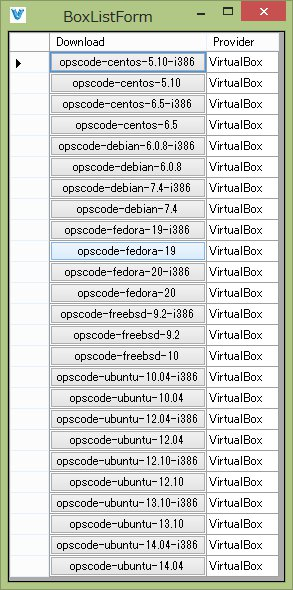
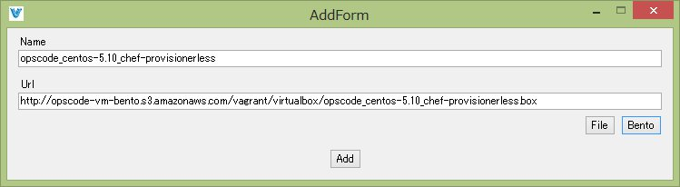
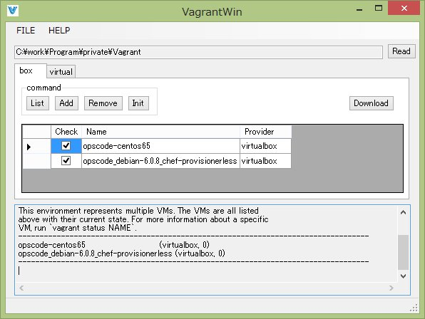
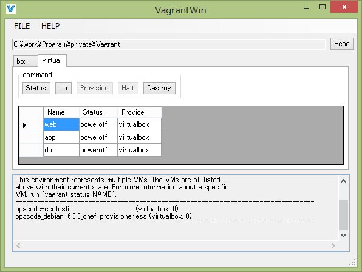

Welcome to VagrantWin Pages.
VagrantWinはVagrantのWindows版GUIアプリです。
動作環境
.NET Framework 4.5.1以上が必要です。 現在作者のWindows8,Windows8.1での動作は確認しております。 それ以外で動作確認ができたら是非@moririringまでご報告いただければ嬉しいです。
スクリーンショット

AppVeyor
https://ci.appveyor.com/project/moririring/vagrantwin
ライセンス
Apache License/@moririring 2014、バグ報告や要望はmoririringまで